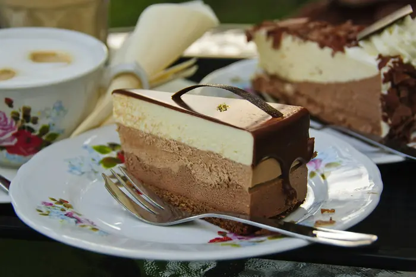
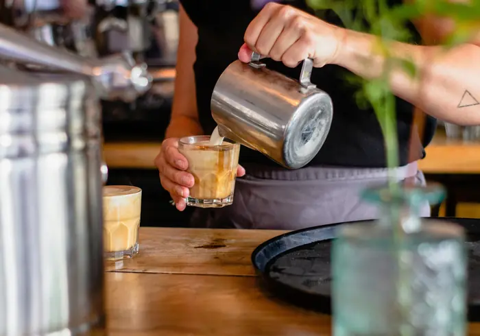
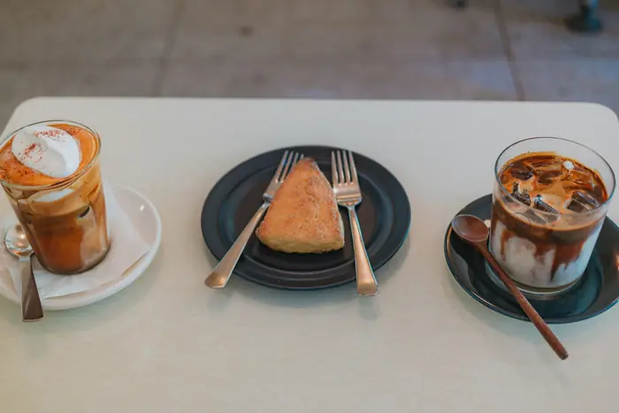
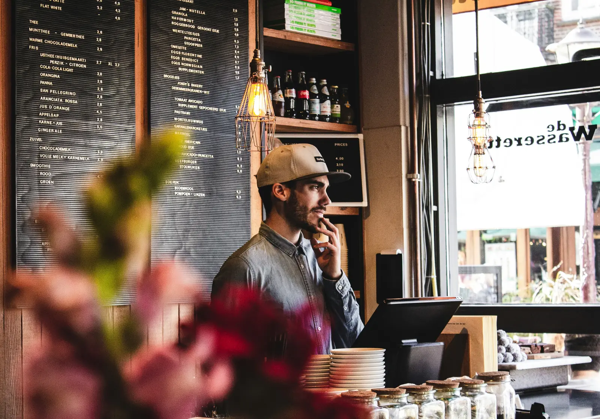
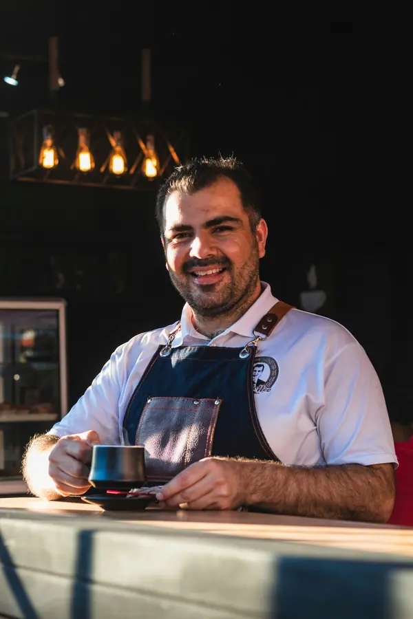
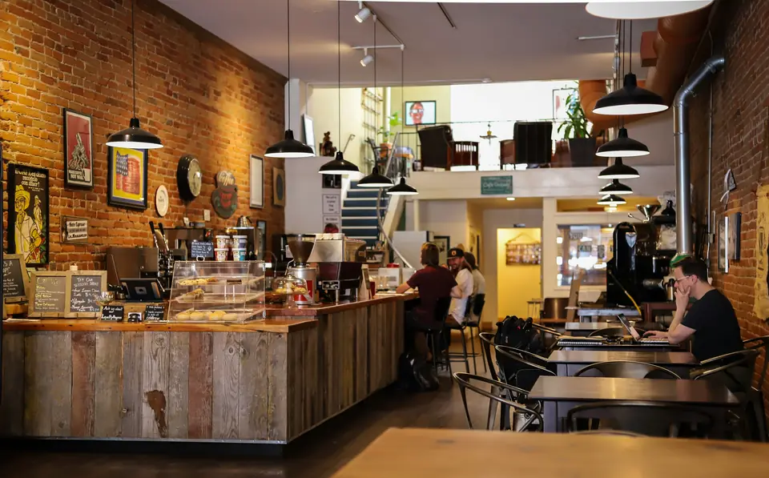

Lo que más sale.
Grano de tueste medio, tostado cada dos semanas en San Joaquín. Leche de avena o almendra sin cobro extra.

Capuchino
$3.300Doble espresso y leche texturizada justo, sin espuma de más. El que más pedimos a la hora de almuerzo.

Torta tres chocolates
$3.900La hace Carmen los jueves. Si vienes el sábado en la tarde, pregunta antes: casi nunca llega.

Cortado en vaso
$2.800Mitad espresso, mitad leche. Lo pide medio barrio a las 8 de la mañana, camino al metro.

Café helado + scone
$5.900Para los días de calor: cualquier café helado más un scone de queso o de naranja.

Para trabajar
un rato largo.
El segundo piso es la parte tranquila: mesas largas, luz de ventana hasta las seis y nadie te va a apurar. Si vienen en grupo a reunión, usen la mesa del fondo.
- Wifi de 300 Mb por fibra. La clave viene impresa en la boleta.
- 22 enchufes, casi uno por asiento en el segundo piso.
- Un piso sin ruido: ni música fuerte ni licuadora cerca.
- Rellenas por $1.000 el café de filtro si sigues trabajando.
Pídelo por WhatsApp y pasa a buscarlo.
- 1
Escríbenos qué quieres y a qué hora pasas.
- 2
Te respondemos con el total y la hora en que queda listo. Casi siempre son 10 minutos.
- 3
Lo retiras en la barra, al lado de la caja. Pagas ahí con tarjeta, efectivo o transferencia.
«Hola, 2 cortados con leche de avena y un scone de queso para las 8:15. A nombre de Paula.»
Pedir por WhatsAppRecibimos pedidos desde las 7:30. No hacemos delivery: somos pocos y preferimos que el café llegue caliente.


Antes aquí había una ferretería.
Ignacio Fuentes estuvo nueve años detrás de barras ajenas en Providencia. En 2019 arrendó el local de la esquina, el que fue la ferretería de don Julio por casi treinta años, y lo arregló con su hermano un fin de semana tras otro. Los estantes del fondo son los mismos.
Le puso Andén porque la mitad de la gente que entra viene saliendo del metro, apurada. La otra mitad se queda toda la mañana. Las dos cosas nos parecen bien.
Hoy somos seis. Carmen, la mamá de Ignacio, hace las tortas; el pan llega a las siete desde una panadería de la calle Dublé Almeyda.
- Abrimos
- Marzo 2019
- Equipo
- 6 personas
- Cafés al día
- Unos 340
Cómo llegar.
Av. Irarrázaval 2940, Ñuñoa.
A media cuadra del metro Irarrázaval.
- En metro
- Estación Irarrázaval, Líneas 3 y 5. Sales y caminas media cuadra.
- En bici
- Cicletero frente a la puerta, para cuatro bicis.
- En auto
- No tenemos estacionamiento; hay en la calle, con parquímetro.
Horario
- Lunes7:30 – 20:30
- Martes7:30 – 20:30
- Miércoles7:30 – 20:30
- Jueves7:30 – 20:30
- Viernes7:30 – 20:30
- Sábado9:00 – 20:00
- DomingoCerrado
Feriados abrimos de 9:00 a 15:00, salvo el 18 de septiembre y Año Nuevo.

Ver ruta en Google Maps